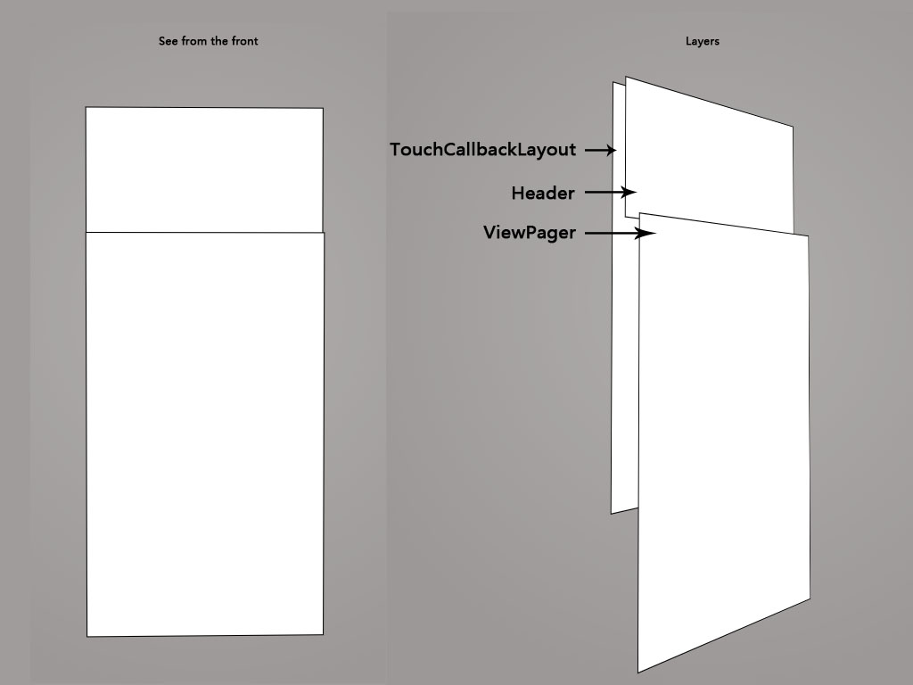
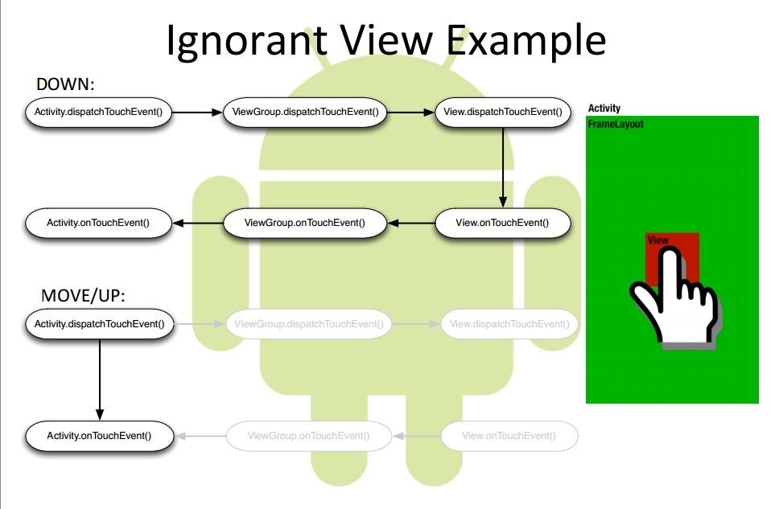
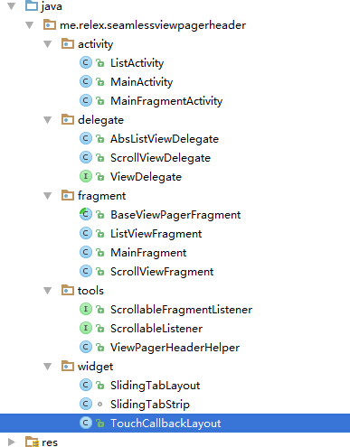

Android Seamless Scrollable Viewpager Header
谢晓枫 YY娱乐
可无缝滑动对接的ViewPager与HeaderView
http://code.yy.com/xiexiaofeng/android-seamless-viewpager-header
https://github.com/kaedea
Android Lollipop 联系人
https://github.com/kaedea
Android Google Play

https://github.com/kaedea
Feature
- 可滚动的头部，最大限制地利用手机屏幕空间
- 头部的滚动与内容的滚动之间是无缝对接的，一次手势即可完成，无需分两次滑动
- 支持在Activity和Fragment上使用
- 能够完全自定义HeaderView和ViewPager
https://github.com/kaedea
Layout Layers

https://github.com/kaedea
Android 触摸事件的传递机制

https://github.com/kaedea
Java Class

https://github.com/kaedea
在实际项目中的使用
YY 3.9
THANK YOU

YY娱乐 谢晓枫